FMOD Engine User Manual 2.02
- Welcome to the FMOD Engine
- Studio API Guide
- Core API Guide
- Platform Details
- White Papers
- Studio API Reference
- Core API Reference
- FSBank API Reference
- Plugin API Reference
- Effects Reference
- Current Effects
- Channel Mix
- Chorus
- Compressor
- Convolution Reverb
- Delay
- Distortion
- Echo
- Fader
- FFT
- Flange
- IT Echo
- IT Low Pass
- Limiter
- Multiband Equalizer
- Normalize
- Object Panner
- Oscillator
- Pan
- 2D Stereo Output Mode
- 2D Surround Output Mode
- 2D Surround Output Mode: Extent
- 2D Surround Output Mode: Direction
- 2D Surround Output Mode: Rotation
- 2D Surround Output Mode: LFE Level
- 2D Surround Output Mode: Stereo Source Discrete Panning
- 2D Surround Output Mode: Stereo Axis
- 2D Surround Output Mode: Stereo Separation
- 2D Surround Output Mode: Height
- 3D Surround Output Mode: 3D Pan Blend
- 3D Surround Output Mode: Position
- 3D Surround Output Mode: Roll-off
- 3D Surround Output Mode: Min Distance
- 3D Surround Output Mode: Max Distance
- 3D Surround Output Mode: Extent Mode
- 3D Surround Output Mode: Sound Size
- 3D Surround Output Mode: Min Extent
- General settings: Enabled Speakers
- General settings: LFE Up-mix Enabled
- General settings: Overall Gain
- General settings: Surround Speaker Mode
- Performance
- Pitch Shifter
- Return
- Send
- SFX Reverb
- Three EQ
- Transceiver
- Tremolo
- Legacy Effects
- Current Effects
- Troubleshooting
- Glossary
10. Effects Reference
This chapter details the built in FMOD effect suite and their purpose, along with implementation details and performance characteristics.
10.1 Current Effects
This section contains high level descriptions of currently supported built in effects.
Effects are categorized in each description for performance as:
- low overhead - Can be used freely without much CPU impact.
- medium overhead - Use carefully with a medium CPU impact.
- high overhead - Use sparingly with a higher CPU impact.
Alway use the FMOD Studio profiler to measure the CPU impact of effects in your project.
10.1.1 Channel Mix
The channel mix effect allows you to group, manipulate and route the individual channels of the signal.
Larger channel count multi-channel audio formats benefit the most from this effect, as mono and stereo signals are usually easily manipulated with a simple pan or volume setting. With larger multi-channel audio formats, the channels in the signal can be routed to any speaker that is required, and each volume level of each channel can be individually set.
Example: 8 stereo streams being interleaved into a single 16 channel stream. Normally FMOD would not know how to pan this type of signal. The grouping feature would let you describe it as 'all stereo' to allow the signal to pan correctly as 8 pairs of stereo signals. There are a variety of grouping modes to choose from.
The channel mix effect provides the following features:
- Per Channel Gain (up to 32 channels). For each channel in a signal, each input gain level can be individually.
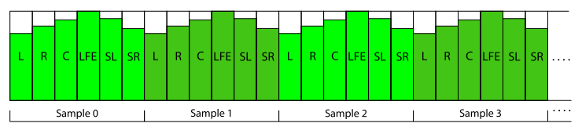
In this example, gain levels have been set on a 5.1 signal. Setting gain for a channel applies to all samples in the signal. - Output Channel Grouping. A multi-channel input signal can be described to play as a group of lower channel count speaker formats. By default, the channel mix effect passes the input channel format to the output without changing it.

In this example, a multi-channel input signal is being described as multiple stereo signals out using the 'All Stereo' setting. - Input to output channel routing. The output speaker for each input channel of a signal can be set individually. By default, the routing for each input channels maps directly to the output equivalent.
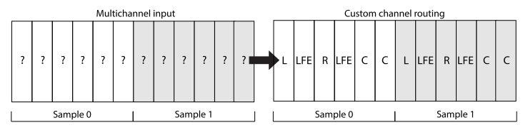
In this example, a multi-channel input signal has its 6 channels of audio routed to custom speakers on the output.
The channel mix effect is controllable by the parameters:
- Per channel gain - This has a range of -80 dB to +10 dB with a default of 0 dB. This can be set using the FMOD_DSP_CHANNELMIX_GAIN_CH0 through to FMOD_DSP_CHANNELMIX_GAIN_CH31 parameters.
- Output channel grouping - This is configurable via group modes such as 'all lfe', 'all mono', 'all stereo', and in-between speaker modes up to 'all 7.4.1', with a default of speaker mode in = speaker mode out. This can be set using the FMOD_DSP_CHANNELMIX_OUTPUT parameter.
- Per channel speaker mapping - This allows for each input channel to specify an output speaker number for complex routing flexibility. Channel mapping for each channel can be set using the FMOD_DSP_CHANNELMIX_OUTPUT_CH0 through to FMOD_DSP_CHANNELMIX_OUTPUT_CH31 parameters.
See Also: FMOD_DSP_TYPE_CHANNELMIX
Performance
Channel mix is a low overhead effect.
To avoid the bandwidth overhead of many streams playing at once, many streams can be interleaved into one using an external tool. The resulting file can then be streamed as a single sound, and the grouping feature can describe the sound as many lower channel count sounds.
10.1.2 Chorus
The chorus effect is often used in music, generated by interference of the source signal with delayed copies of the original that modulate their delay offsets over time. The effect works best on sounds which are sustaining in nature, and has a full / shimmering characteristic.
The chorus effect is characterized by a single delay line per channel of the signal, where each delay line oscillates its time offset in a sinusoidal manner, at a rate and range specified by the user.
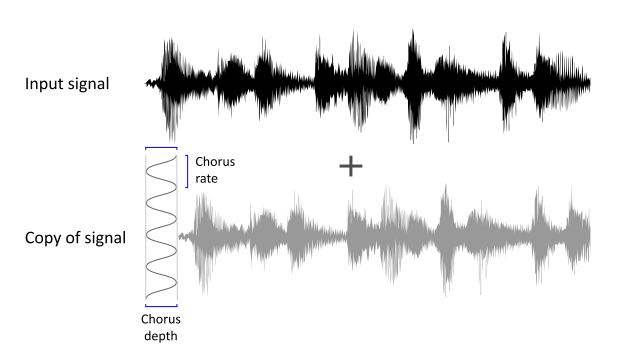
A signal (black) having a copy (grey) added to itself, at a delay that oscillates back and forth in time with a speed of chorus rate, to a maximum delay of chorus depth. The original and copy of itself are gain balanced so that the signal does not get louder.
In multi-channel signals each subsequent channel has its delay incremented by 90 degrees in the sinusoidal cycle, and wrapping around back to a 90 degree offset each time. i.e.
| Speaker Configuration | ||||||
|---|---|---|---|---|---|---|
| Stereo | L = 90deg | R = 180deg | ||||
| Surround 5.1 | FL = 90deg | FR = 180deg | C = 270deg | LFE = 90deg | SL = 180deg | SR = 270deg |
The chorus effect is controllable by the parameters:
- Depth - Delay used to achieve the effect. Has a range of 0 to 100ms with a default of 3 ms. Set with the FMOD_DSP_CHORUS_DEPTH parameter.
- Rate - Speed of oscillation. Has a range of 0 to 20 Hz with a default of 0.8 Hz. Set with the FMOD_DSP_CHORUS_RATE parameter.
- Mix - Percentage of effect applied to the input signal. The mix is a scale between the wet and the dry signal per channel, so that the loudness of the output stays consistent. Has a range of 0 to 100% with a default of 50%. Set with the FMOD_DSP_CHORUS_MIX parameter.
See Also: FMOD_DSP_TYPE_CHORUS
Performance
Chorus is a medium overhead effect.
Chorus is a comb filter which means it uses extra memory to buffer audio.
10.1.3 Compressor
The compressor effect reduces the volume of loud sounds above a certain threshold, reducing or compressing an audio signal's dynamic range.
The compressor reacts to the signal exceeding the 'threshold', which is a dB setting set by the user. If the signal exceeds this threshold a gain envelope is applied to the signal to reduce the signal by an amount specified as the 'ratio'.
The ratio is the fraction of the input level that is above the threshold, that the signal is reduced to in dB. If a ratio is set to 2, for every 2 dB above the threshold, the compressor only allows 1 dB above the threshold through. If a ratio is set to 4, for every 4 dB above the threshold, the compressor only allows 1 dB above the threshold through. The higher the ratio, the more audible and agressive it will be while a low ratio will provide gentler compression.
The reduction is controlled by a timed envelope which modifies the gain. The envelope has an attack and release period. The start of the attack happens when the threshold is exceeded. This can be set in milliseconds. Once the input signal level is below the threshold, the release stage starts will return the gain back to the starting value.
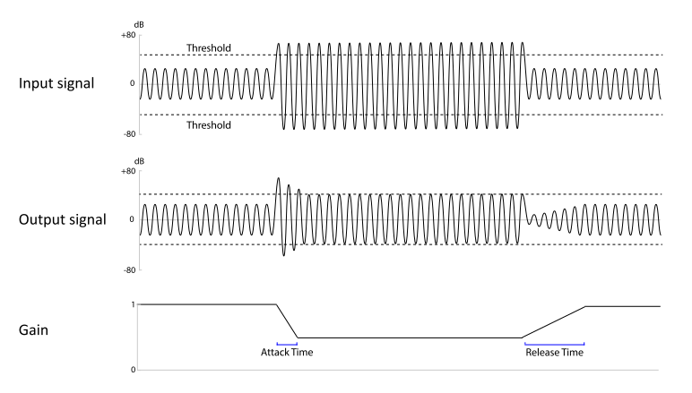
A signal suddenly exceeding the threshold is aggressively gain reduced with a high ratio. Attack and release states of an envelope control the timing of the reduction and the return to the original level after the signal drops back below the threshold.*
Characteristics of the compressor effect:
- Uniform across the whole spectrum, so all frequencies are affected equally.
- Analysis of the input signal to compare against threshold is 'peak sensing' and not 'RMS sensing'.
- Envelope transitions are 'hard knee' which is the shape of the envelope when the attack and release phase start and stop.
The compressor effect is controllable by the parameters:
- Threshold - The threshold level has a range of -80 dB to 0 dB and has a default of 0 dB. Set with FMOD_DSP_COMPRESSOR_THRESHOLD.
- Ratio - The ratio has a range of 1 to 50 and has a default of 2.5. The higher the ratio the more aggressive the compression. Set with FMOD_DSP_COMPRESSOR_RATIO.
- Linked mode - Multi-channel, so each individual channel reacts independently of each other. Linked Mode is also available which mixes all channels into a mono signal before processing. Set with FMOD_DSP_COMPRESSOR_LINKED.
- Side chain - Side chaining is available to allow an outside signal to control the level rather than the incoming signal. Set with FMOD_DSP_COMPRESSOR_USESIDECHAIN. To connect a sidechain to the compressor, the DSP API is used to add another DSP using DSP::addInput and FMOD_DSPCONNECTION_TYPE_SIDECHAIN.
- Attack speed - Attack speed of the gain envelope is available, having a range of 0.1 ms to 1000 ms with a default of 20 ms. Set with FMOD_DSP_COMPRESSOR_ATTACK.
- Release speed - Release speed of the gain envelope is available, having a range of 10 ms to 5000 ms with a default of 100 ms. Set with FMOD_DSP_COMPRESSOR_RELEASE.
- Gain make-up - Gain make-up allows a constant gain to be applied at the output having a range of 0 dB to 30dB, with a default of 0 dB. Set with FMOD_DSP_COMPRESSOR_GAINMAKEUP.
In a real-time audio engine, the compressor is not guaranteed to catch every peak above the threshold level, because it cannot apply gain reduction instantaneously. The time delay is determined by the attack time. However setting the attack time too short will distort the sound, so it is a compromise. High level peaks can be avoided by using a short attack time - but not too short, and setting the threshold a few decibels below the critical level.
See Also: FMOD_DSP_TYPE_COMPRESSOR
Performance
Compressor is a medium overhead effect.
10.1.4 Convolution Reverb
The convolution reverb effect is used to simulate an environment by processing audio with a recording of a real world location (the 'impulse response'), in order to reproduce the reverberation characteristics of that environment.
Convolution reverb differs to FMOD's SFX Reverb, in that it is not controlled by a set of parameters, but instead is set by an impulse response file, which has been previously recorded and supplied to the effect.
This has the advantage of reproducing a space's reverberation characteristics very faithfully, but has the disadvantage of not being flexible. The convolution reverb environment cannot be easily morphed into a different environment,
compared to the SFX Reverb effect which can set different tuning parameters to get the desired result in realtime. A workaround for this might be to have more than 1 convolution reverb running and cross fade between them, but it will use more CPU power to do so.
Convolution reverb is a relatively expensive effect, due to it being processed in the frequency domain which includes costly spectral to time domain conversions and vice versa, as well as the process of convolving the input signal with the impulse response in real-time.
The convolution effect is controllable by the parameters:
- The impulse - This must be 16 bit PCM, and have the same sample rate as the output rate of the project / application. The impulse response data can supplied with FMOD_DSP_CONVOLUTION_REVERB_PARAM_IR.
- Linked mode - The input signal is mixed down to mono by default before being convolved through the reverb processor. 1:1 channel mapping from input to impulse if possible is available through the channel linking feature. Set with FMOD_DSP_CONVOLUTION_REVERB_PARAM_LINKED.
- Mix - The mix of the convolved signal (wet) vs the original signal (dry) which both have a range of -80 dB to +10 dB. Set with FMOD_DSP_CONVOLUTION_REVERB_PARAM_WET and FMOD_DSP_CONVOLUTION_REVERB_PARAM_DRY.
The output channel count of the DSP is the channel count of the impulse response source.
Creation of an impulse response for use with the convolution reverb effect
For Impulse response data, you can purchase/download professionally recorded space data and feed it straight into the FMOD convolution reverb effect, or you can make your own.
A typical impulse starts with an exciter, such as a burst of noise, and then the resulting sound contains the reverberation of the exciter from the surrounding environment.
To make your own requires recording an 'impulse' (a burst of white noise or a longer sine wave sweep sound) in the space, and the idea is to record the resulting reverberation from the surroundings.
An impulse needs both power and full spectrum to capture the room’s full response. An ideal impulse cannot exist in reality, so an approximation is used, for example the popping of a balloon or a shot from a starter pistol.
The next step after this is to deconvolve the recording to produce an impulse response. 3rd party tools exist for this. When saving a response, for a 3D real-time environment it is best to use a monophonic (1 channel) impulse, as you do not want directionality baked into the impulse itself. FMOD's 3D engine will position sounds in 3D an pan them in any speakers, and because of the nature of reverb, any directionality is generally lost in the real world.
See Also: FMOD_DSP_TYPE_CONVOLUTIONREVERB
Performance
Convolution reverb is a high overhead effect.
Although it is a high overhead effect in nature, FMOD's convolution engine has been highly optimized to use platform specific vector processing, as well as multiple CPU threads to reduce impact on the main DSP mixing thread.
To save CPU time and memory, the shorter an impulse response is, the faster it will be. Longer impulses use larger amounts of CPU time.
10.1.5 Delay
The delay effect is used to delay individual channels of a signal. It is simpler than an echo, and is used to manipulate the timing of multi-channel signals with greater control.
The delay effect is achieved by storing the signal for each channel then playing it back after periods of time specified by the user.

A stereo signal having its left and right channel delayed into the mix with different delay lengths.
The delay effect is controllable by the parameters:
- Per channel delay. Each channel can have its own delay, up to 16 channels, with a range of 0 to 10 seconds and a default of 0. Set with the FMOD_DSP_DELAY_CH0 to FMOD_DSP_DELAY_CH15 parameters.
- Maximum delay. Because delay requires buffering of audio signals, a maximum delay can be set to control memory usage. Per channel delay must be smaller or equal to this value. Set with FMOD_DSP_DELAY_MAXDELAY parameter.
See Also: FMOD_DSP_TYPE_DELAY
Performance
Delay is a low overhead effect.
Delay is a stores a history which means it uses more memory due to the buffering of audio signals. Control maximum delay lengths with FMOD_DSP_DELAY_MAXDELAY.
10.1.6 Distortion
The distortion effect is used to alter the shape of a signal to make it 'noisier'. Distortion is used to simulate low quality equipment or being passed through a low quality communications channel for example.
The effect is achieved by amplifying then clipping the signal at levels controlled by the user. The loudness characteristic of the distortion is not levelled, and may need an additional fader to compensate for the increased loudness.
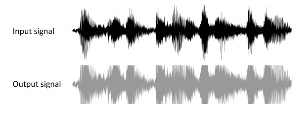
A signal being distorted with some compensation afterwards to bring the loudness of the output into line with the input.
The distortion effect is controllable by the parameters:
- Distortion level - The amount of distortion is controlled by with one parameter with a range between 0 (none) and 1 (full) and a default of 0.5. Set with FMOD_DSP_DISTORTION_LEVEL.
See Also: FMOD_DSP_TYPE_DISTORTION
Performance
Distortion is a low overhead effect.
10.1.7 Echo
The echo effect simulates the reflection of a sound that arrives with a delay after the initial sound is heard. With feedback it can then continue to be heard at a diminished volume level until the sound fully attenuates. This effect is a cheaper, simple way to simulate an environment and its early / harsher reflections than a full reverb effect.
Echo is achieved by mixing the incoming signal into an echo buffer at an offset determined by the delay time, and then mixing that buffer back into the original input signal with a volume level determined by the feedback.
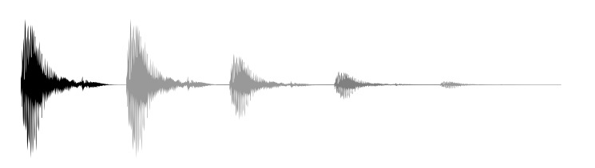
A short sound playing (black) and its delayed copy playing back, then continuing to feed itself back in with the same delay each time, but with diminished power.
The echo effect is controllable by the parameters:
- Delay - The time taken to hear an echo of the original signal is specified with the 'delay' parameter, which ranges between 10ms and 5000ms and has a default of 500ms. Set with FMOD_DSP_ECHO_DELAY.
- Feedback - The amount of the signal fed back into the echo buffer after the initial delay is specified with the 'feedback' parameter, which is defined as a percentage between 0% and 100%, with a default of 50%. Set with FMOD_DSP_ECHO_FEEDBACK.
- Wet Mix and Dry Mix - Wet and dry mix of the echo effect can be set separately, which both have a range of -80 dB to +10 dB and a default of 0 dB. Set with FMOD_DSP_ECHO_DRYLEVEL and FMOD_DSP_ECHO_WETLEVEL.
The outgoing channel count of the echo effect is always be the same as the number coming in.
Due to the initial delay tap having no attenuation, simulating attenuation from the first tap onwards can be done by scaling the whole effect with the FMOD_DSP_ECHO_WETLEVEL parameter.
See Also: FMOD_DSP_TYPE_ECHO
Performance
Echo is a medium overhead effect.
Echo is a comb filter which means it uses extra memory to buffer audio.
10.1.8 Fader
The fader effect is used to scale the volume of a signal.
The fader DSP is a common effect used in DSP chains to alter the attenuation or amplification of a signal. It is used by Channels and ChannelGroups as their main source of volume control.
The fader effect is controllable by the parameters:
- Gain - The fader can attenuate the signal to silence, or amplify it. This gain value has a range of -80 dB to +10 dB with a default of 0 dB. Set with FMOD_DSP_FADER_GAIN.
- Overall gain - The fader can be used as a source of information to query the overall attenuation of the signal. Get with FMOD_DSP_FADER_OVERALL_GAIN.
See Also: FMOD_DSP_TYPE_FADER
Performance
Fader is a low overhead effect.
10.1.9 FFT
The FFT (Fast Fourier Transform) effect analyzes the source signal and provides information about the frequency spectrum associated with the incoming signal. This can be used to provide information about the dominant pitch of a sound (for pitch detection), or for display or measurement of the power of different parts of the spectrum at the same time.
The FFT DSP is a process that converts a time domain signal to a frequency domain representation in realtime.
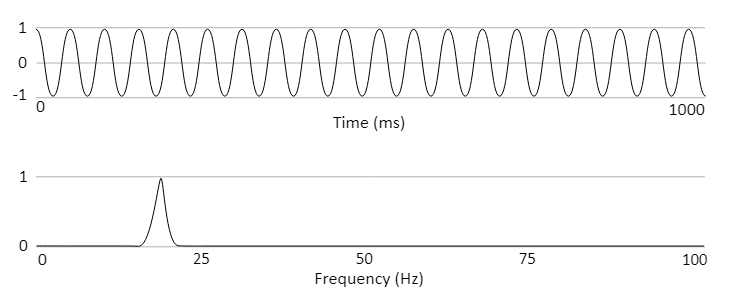
A sine wave playing at 20hz in the time domain (top) and a spectrum representation (bottom) of the same wave after an FFT has processed it.
The FFT effect is controllable by the parameters:
- Block Size - The FFT analyzes the signal in blocks of samples that are a power of 2 between 128 and 16384 samples, with a default setting of 2048. The size has a trade-off of accuracy vs cpu expense and latency. Smaller blocks are more efficient and are lower latency, but have less results, so are coarser in their accuracy. Larger blocks are less efficient and incur larger latency of the results, but have more data and are better in their accuracy. Set with FMOD_DSP_FFT_WINDOWSIZE.
- Windowing - Each time a block is processed, it must taper the start and end to avoid unwanted spectral leakage or transient signals interfering with the analysis. This is done via applying a window to the data before processing it. The default window type is the 'Hamming' type. Set with FMOD_DSP_FFT_WINDOWTYPE.
- Spectrum data - The resultant spectral data can be retrieved as an array, one for each frequency division. Get with FMOD_DSP_FFT_SPECTRUMDATA.
- Dominant frequency - An analysis of the spectrum data can be retrieved as a single helper value which provides the most 'dominant' or powerful frequency. Useful for simple pitch detection. Get with FMOD_DSP_FFT_DOMINANT_FREQ.
Cyclic signals such as a sine wave that repeat their cycle in a multiple of the window size do not need windowing. I.e. If the sine wave repeats every 1024, 512, 256 etc samples and the FMOD fft window is 1024, then the signal would not need windowing. Not windowing is the same as the default, which is FMOD_DSP_FFT_WINDOW_RECT.
For more natural sounds, and more complex sounds, different window shapes can be used which are supported by this effect. See FMOD_DSP_FFT_WINDOW for a list of window types and examples of their shapes.
See Also: FMOD_DSP_TYPE_FFT
Performance
FFT is a high overhead effect.
10.1.10 Flange
The flange effect is generated by interference of the source signal with a single delayed copy that slowly modulates its delay offset over time. This produces a wooshing, sweeping effect. Typically used in music, it can also be used to create an otherworldly repetitive effect for atmosphere.
In this effect a copy of the incoming signal is delayed and mixed back in at a varying offset that cycles on a sinusoidal shape. The delay has a maximum depth of 10ms. As there are 2 versions of the same signal, by default each signal is given 50% mix, so that the total loudness is generally not louder than the original signal.
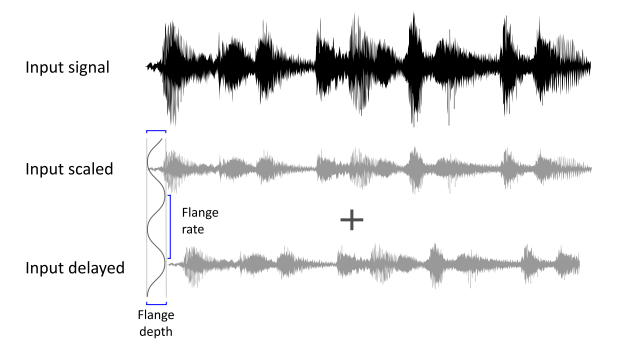
A sound being fed in (black) and the gain reduced version (grey) being added to a copy (grey) at a delay that changes over time, according to a sinusoidal shape. The delay has an adjustable rate and depth.
The flange effect is controllable by the parameters:
- Depth - This can be set between 0.01 and 1, with a default of 1. A value of 1 represents around 10 ms shift from the original signal. Anything above 10ms is not considered flange because to the ear it begins to 'echo' so 10ms is the highest value possible. Set with FMOD_DSP_FLANGE_DEPTH.
- Rate - Flange rate is measured in Hz and has a range of 0 to 20 Hz, with a default of 0.1 Hz. Set with FMOD_DSP_FLANGE_RATE.
- Mix - Flange balance is the mix between the original signal and the delayed copy, with a range of 0% to 100%, with a default to 50%. Set with FMOD_DSP_FLANGE_MIX.
See Also: FMOD_DSP_TYPE_FLANGE
Performance
Flange is a medium overhead effect.
Flange is a comb filter which means it uses extra memory to buffer audio.
10.1.11 IT Echo
The IT echo effect is a variation of the original echo effect, which simulates the reflection of a sound that arrives with a delay after the initial sound is heard. With feedback it can then continue to be heard at a diminished volume level until the sound fully attenuates.
This version of echo is stereo only, but has a variable delay per channel, and allows bouncing the echo from left to right speakers and vice versa. It was originally introduced to support the type of echo used in .IT music files.
This echo variation originated to support .IT music files. The effect emulates in software, the Microsoft Direct X echo which is the employed by the Mod Plug Tracker program.
The IT echo effect is controllable by the parameters:
- Left / right delay - As this is a stereo filter made intended for .IT playback, it is targeted for stereo signals. With mono signals only the left delay is used. For multi-channel signals (>2) there is no echo on the extra channels. Set with FMOD_DSP_ITECHO_LEFTDELAY and FMOD_DSP_ITECHO_RIGHTDELAY.
- Pan Delay - Panning of the stereo delays can be set to ping-pong left and right with each successive echo. Set with FMOD_DSP_ITECHO_PANDELAY.
- Feedback level - Amount of output signal that is passed back in as an input signal in successive updates. Set with FMOD_DSP_ITECHO_FEEDBACK
- Wet / Dry mix - Percentage of input signal vs processed signal that is sent to output. By default the percentage is set to 50 for an even mix, with 0 being no effect passed to output, with 100 being no original dry signal passed to the output. Set with FMOD_DSP_ITECHO_WETDRYMIX
See Also: FMOD_DSP_TYPE_ITECHO
This echo does not have interpolation between changes in delay, which means every time the delay is changed the echo buffer is cleared and a period of silence will occur.
Performance
IT Echo is a medium overhead effect.
Echo is a comb filter which means it uses extra memory to buffer audio.
10.1.12 IT Low Pass
The IT low pass effect is used to attenuate or remove high frequencies in a signal, controlled with a cutoff frequency that is specified by the user. The resonance attribute or 'Q' value of the filter can also be specified, to affect the gain of the signal at the cutoff frequency, to further alter the characteristics of the sound.
This low pass variation originated to support .IT music files. The effect emulates low pass filter effect employed by the Impulse Tracker program.
Characteristics of the IT low pass effect:
- This is different to the default Low Pass, Multi Band Equalizer or Low Pass Simple effects in that it uses a different quality algorithm and is the filter used to produce the correct sounding playback in .IT files.
- This filter actually has a limited cutoff frequency below the specified maximum, due to its limited design (8060hz), so for a more open range filter use Low Pass, Multi Band Equalizer or for a filter with no resonance control, Low Pass Simple.
The IT low pass effect is controllable by the parameters:
- Cutoff frequency - The frequency for the low pass filter ranges between 1 Hz and 22 kHz with a default of 5 kHz. Set with FMOD_DSP_ITLOWPASS_CUTOFF.
- Resonance - The low pass resonance or Q value is a linear value that ranges between 0 and 127 with a default of 1. Set with FMOD_DSP_ITLOWPASS_RESONANCE.
See Also: FMOD_DSP_TYPE_ITLOWPASS
Performance
IT low pass is a low overhead effect.
10.1.13 Limiter
The limiter effect prevents the signal from exceeding a certain amplitude. Originally limiters were used to quickly avoid audio from overworking electronics and damaging them. Now they are used to control dynamics and avoid noisy clipping with the right settings.
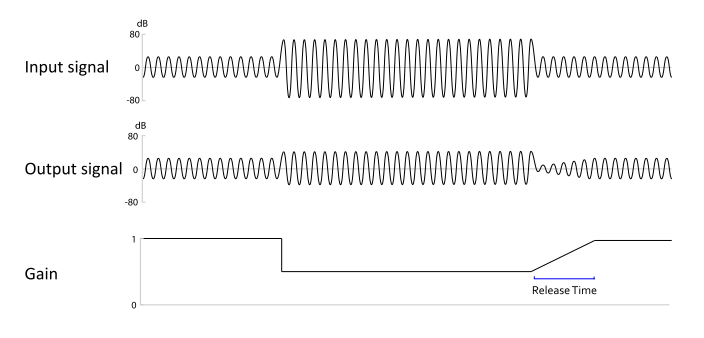
When the input signal exceeds a threshold (the ceiling), it immediately reduces the gain to avoid clipping or excessive loudness. When the input signal returns to a level underneath the ceiling, the gain is not immediately returned to normal, it is ramped back with a release envelope.
The Limiter effect is controllable by the parameters:
- Ceiling - The FMOD limiter is a hard limiter, which detects peaks and immediately limits them by scaling the whole signal to stay within the ceiling. The ceiling has a range of -12 dB to 0 dB and has a default of 0 dB. Set with FMOD_DSP_LIMITER_CEILING.
- When peaks drop below the desired ceiling setting, the scale applied downwards to the signal is gradually reduced or released over the time specified in the release. The release time has a range of 1 ms to 1000 ms with a default of 10ms. Set with FMOD_DSP_LIMITER_RELEASETIME.
- Linked mode - The processing mode for the effect can be 'linked' which means all channels in a signal are summed together and treated as mono first (no per channel processing), or 'unlinked' which is the default and is individual processing per channel. The default setting is unlinked. Set with FMOD_DSP_LIMITER_MODE.
- Maximizer gain - The input signal can have a gain applied to it which is overridden by the ceiling, making the signal louder but reducing dynamic range. The maximizer gain has a range of 0 dB to +12 dB with a default of 0 dB. Set with FMOD_DSP_LIMITER_MAXIMIZERGAIN.
See Also: FMOD_DSP_TYPE_LIMITER
Performance
Limiter is a low overhead effect.
10.1.14 Multiband Equalizer
Flexible five band parametric equalizer. This effect is used to attenuate and accentuate frequencies for greater control over frequency shaping within a signal.
The multiband equalizer effect processes each channel of the incoming signal by passing it through up to 5 selectable filter types in series (one after another) from A to E.
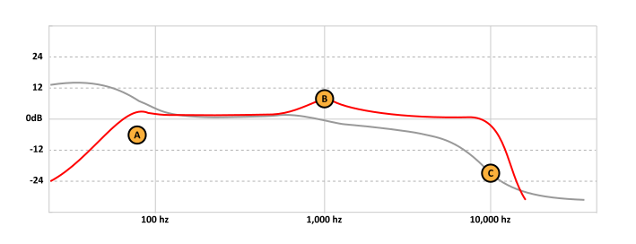
Frequency response curve shown in red (phase response in gray) with three enabled filter types. (A) 12dB high-pass filter set at 70Hz. (B) Peaking filter set at 1kHz. (C) 24dB low-pass filter set at 10kHz.
The different filter types selectable are:
- Low-pass: Resonant filter that attenuates frequencies above the specified cutoff frequency at a rate of 12dB, 24dB or 48dB per octave. Specified Q (quality factor) controls the resonance of the effect which is a linear gain applied at the cutoff frequency, the default of 0.707 ensures no signal boost below to the cutoff frequency.
Select with FMOD_DSP_MULTIBAND_EQ_FILTER_LOWPASS_12DB, FMOD_DSP_MULTIBAND_EQ_FILTER_LOWPASS_24DB or FMOD_DSP_MULTIBAND_EQ_FILTER_LOWPASS_48DB - High-pass: Resonant filter that attenuates frequencies below the specified cutoff frequency at a rate of 12dB, 24dB or 48dB per octave. Specified Q (quality factor) controls the resonance of the effect which is a linear gain applied at the cutoff frequency, the default of 0.707 ensures no signal boost above the cutoff frequency.
Select with FMOD_DSP_MULTIBAND_EQ_FILTER_HIGHPASS_12DB, FMOD_DSP_MULTIBAND_EQ_FILTER_HIGHPASS_24DB or FMOD_DSP_MULTIBAND_EQ_FILTER_HIGHPASS_48DB - Low-shelf: Filter that boosts or attenuates lower frequencies to a specified gain amount. The transition slope is fixed at the steepest possible to achieve half the desired gain modification at the specific midpoint frequency.
Select with FMOD_DSP_MULTIBAND_EQ_FILTER_LOWSHELF. - High-shelf: Filter that boosts or attenuates higher frequencies to a specified gain amount. The transition slope is fixed at the steepest possible to achieve half the desired gain modification at the specific midpoint frequency.
Select with FMOD_DSP_MULTIBAND_EQ_FILTER_HIGHSHELF. - Peaking: Filter that boosts or attenuates frequencies at a specified center frequency by a specified gain amount. Specified Q (quality factor) controls the bandwidth of the effect which governs how narrow or broad the affected frequency range is.
Select with FMOD_DSP_MULTIBAND_EQ_FILTER_PEAKING. - Band-pass: Filter that attenuates frequencies surrounding a specified center frequency. Specified Q (quality factor) controls how sharply the frequencies attenuate.
Select with FMOD_DSP_MULTIBAND_EQ_FILTER_BANDPASS. - Notch: Filter that attenuates frequencies at a specified center frequency. Specified Q (quality factor) controls the bandwidth of the effect which governs how narrow or broad the affected frequency range is.
Select with FMOD_DSP_MULTIBAND_EQ_FILTER_NOTCH. - All-pass: Filter that modifies the phase response at the specified frequency. Specified Q (quality factor) controls the sharpness of the phase transition.
Select with FMOD_DSP_MULTIBAND_EQ_FILTER_ALLPASS.
API reference. The 5 bands (A to E) can have the relative Frequency, Q (quality factor) or Gain values for a filter type with the following API parameters.
Frequency
A - FMOD_DSP_MULTIBAND_EQ_A_FREQUENCY
B - FMOD_DSP_MULTIBAND_EQ_B_FREQUENCY
C - FMOD_DSP_MULTIBAND_EQ_C_FREQUENCY
D - FMOD_DSP_MULTIBAND_EQ_D_FREQUENCY
E - FMOD_DSP_MULTIBAND_EQ_E_FREQUENCY
Q (quality factor)
A - FMOD_DSP_MULTIBAND_EQ_A_Q
B - FMOD_DSP_MULTIBAND_EQ_B_Q
C - FMOD_DSP_MULTIBAND_EQ_C_Q
D - FMOD_DSP_MULTIBAND_EQ_D_Q
E - FMOD_DSP_MULTIBAND_EQ_E_Q
Gain
A - FMOD_DSP_MULTIBAND_EQ_A_GAIN
B - FMOD_DSP_MULTIBAND_EQ_B_GAIN
C - FMOD_DSP_MULTIBAND_EQ_C_GAIN
D - FMOD_DSP_MULTIBAND_EQ_D_GAIN
E - FMOD_DSP_MULTIBAND_EQ_E_GAIN
See Also: FMOD_DSP_TYPE_MULTIBAND_EQ
Performance
Multiband EQ is a low overhead to medium overhead effect.
Each band of the effect is a separate filter that carries the same CPU cost regardless of fundamental type (except 24dB / 48dB variations - see below). Performance scales linearly as each band is enabled, i.e. running the effect with two enabled filters costs twice the CPU performance of running with a single filter enabled. If the signal has multiple channels performance scales approximately linearly with the channel count with some reductions due to multi-channel optimizations.
Some filter types have 12, 24 or 48 dB (decibel) variations, these variations indicate the filter is run once (12dB), twice (24dB) or four times (48dB) to achieve steeper roll off curves. As with all the provided filter types, performance scales linearly with the number of times the filter is run, therefore a 48dB filter (which runs four times) has approximately four times the CPU cost as a single 12dB filter with some reduction due to optimizations.
10.1.15 Normalize
Normalize amplifies the sound based on the maximum peaks within the signal. This is used to increase the loudness of a signal to a uniform maximum level.
The normalize filter analyzes the signal in realtime and scales the output based on maximum peaks detected. The lower limit of peak detection, and upper scale multiplier can be controlled by the user.
The normalize effect is controllable by the parameters:
- Fade time - To avoid reacting too quickly to sudden changes, the process occurs over a longer time to avoid pops and sudden bursts of noise. The duration is controlled with the normalize 'fade time' parameter which has a range of 0 to 20,000 ms, with a default of 5000 ms. Set with FMOD_DSP_NORMALIZE_FADETIME.
- Threshold - Below certain signal levels, normalization is not desired. A low level signal that is normalized by its small peaks may cause excessive amplification of things like background hiss so a threshold setting can be used. The Threshold setting ranges from 0 to 1 as a linear value, with a default of 0.1. Set with FMOD_DSP_NORMALIZE_THRESHOLD.
- Maximum Amplification - To avoid excessive amplification, a limit can be set on the maximum amplification factor. Maximum amplification has a range of 1 to 100,000 with a default of 20. Set with FMOD_DSP_NORMALIZE_MAXAMP.
By default the normalizer takes the highest peak value and scale it to 0 dB, scaling the rest of the signal by the same scale factor.
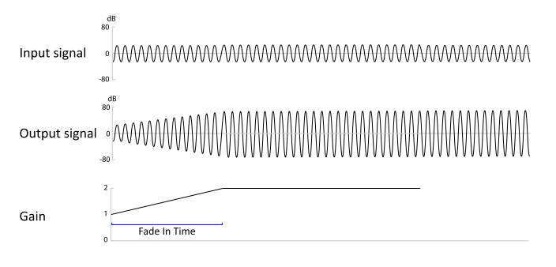
A signal with low gain having its gain slowly increased until it reaches a ceiling level.
See Also: FMOD_DSP_TYPE_NORMALIZE
Performance
Normalize is a low overhead effect.
10.1.16 Object Panner
The object panner effect is specifically designed to work with 3D platform-specific technologies such as Windows Sonic, PlayStation VR, and Dolby Atmos. It functions by routing the signal and the event's 3D positional information directly to a hardware device, instead of through the ChannelGroups and DSPs into which the signal is nominally routed.
The FMOD Studio documentation refers to this effect as an 'Object Spatializer'.
As a result of the signal bypassing the mixer, the signal does not encounter any effects or sends "downstream" of the object panner. Unlike the Pan effect or built in Core API panning, the object panner does not automatically up-mix the signal to your project's surround speaker mode.
Signals processed by this effect are sent to the global object mixer (effectively a send), any DSP connected after this will receive silence.
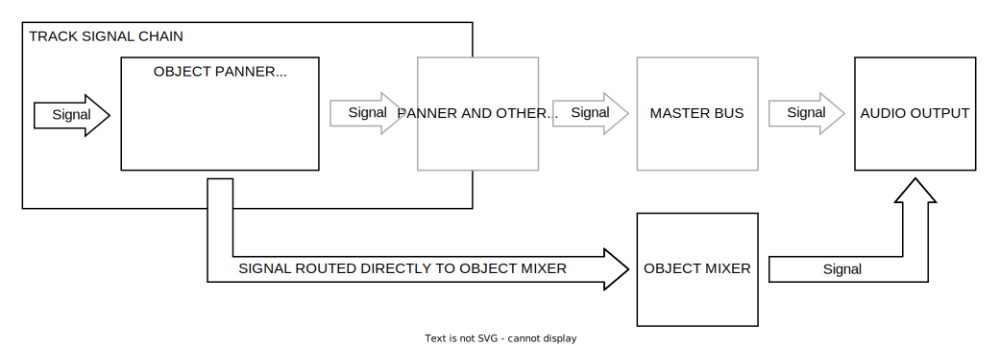
The signal flow above shows that the object panner sends the signal to the final output, bypassing the mixing engine.
For best results this effect should be used with Win Sonic or Audio 3D to get height panning. Playback with any other output results in fallback panning.
For a description of the parameters for an Object Panner, see the Panner effect reference as it shares a subset of the same parameters.
See Also: FMOD_DSP_TYPE_OBJECTPAN
Performance
Object Panner is a low overhead effect.
10.1.17 Oscillator
The Oscillator effect is a pure tone generator. It can be used to generate a variety of wave form shapes such as sine, saw, square and noise. Using a tone generator is an efficient way to create sound without using any memory.
The oscillator is a generator effect. This means it ignores incoming signals and writes out audio as a mono output signal. There are 5 different types of oscillator shape.
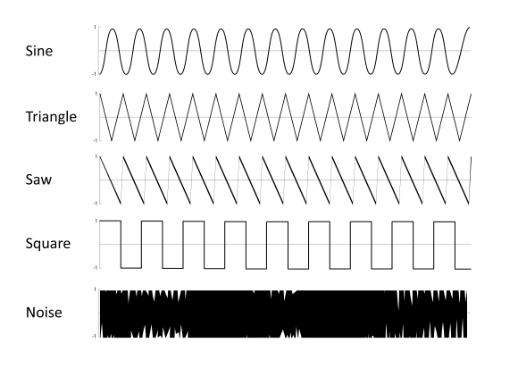
The different wave shapes that the oscillator effect supports.
The oscillator effect is controllable by the parameters:
Wave Shape - wave shape such as sine, square, triangle, saw, noise. Set with FMOD_DSP_OSCILLATOR_TYPE.
Rate - The rate in Hz at which the audio is generated for different pitched tones. Set with FMOD_DSP_OSCILLATOR_RATE.
See Also: FMOD_DSP_TYPE_OSCILLATOR
Performance
Oscillator is a low overhead effect.
10.1.18 Pan
The Pan effect is a multi channel, multi speaker signal distribution effect, with 2D and 3D panning controls. Pan control is used to allow the user to specify which speakers the signal should be audible in and can be used to convey a sense of movement if it is set to different positions in real-time.
The FMOD Studio documentation refers to this effect as a 'Spatializer' when using 3D functionality.
The Pan effect can pan a signal based on a 3D emitter/listener position, or on a 2D basis where the speakers are panned to directly as if they were laid out on a stereo X axis or on a surround sound circle, where in both cases the listener is situated in the middle.
There are several options for panning so the guide below lists the different cases and features and how they are implemented.
The panner can be used in a purely 2D mode, or 3D mode, or a mixture of the two by utilizing the Pan Blend parameter.
The parameters for the pan effect are listed as topics below to elaborate on their functionality:
2D Stereo Output Mode
When the FMOD_DSP_PAN_MODE_TYPE is FMOD_DSP_PAN_MODE_STEREO, a simple position control can be used to pan a sound between left and right speakers, where a value of -100 is full left, 0 is in the middle and +100 is full right.
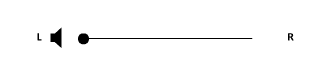
The audible position of a sound in between stereo speakers can be set with a single stereo position value.
API reference. Positioning sound between left and right in a stereo speaker mode can be done with the FMOD_DSP_PAN_2D_STEREO_POSITION parameter.
The channels of a source signal are interpreted in different ways when panned to a stereo output:
- A mono signal is distributed with a constant power level with different left/right contributions based on the position value.
- Stereo and above channel counts have their channels faded in and out in their matching left or right speaker, rather than moved between speakers as a mono signal would.
2D Surround Output Mode
When the FMOD_DSP_PAN_MODE_TYPE is FMOD_DSP_PAN_MODE_SURROUND (more than stereo, for example quad / 4.1 or 7.1), the source signal is distributed through the output speaker mode using a relevant up mix or down mix algorithm.
When panning any type of signal in a surround output mode, the distribution is described as a proportion of a set of speakers laid out on a circle. This is described by:
- Direction. Relative angle to the front facing position from the center point (or listener position) of a circle.
- Extent. Amount of distribution on a circle relative to the direction.
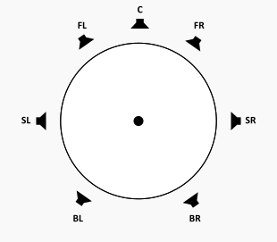
A default direction of 0 (front center) and an extent of 360 (black circle), in a 7.1 speaker mode. The source signal's channels are distributed between all speakers in their default positions. The dot is a virtual representation of an equivalent x,y position of a signal in the circle.
2D Surround Output Mode: Extent
The extent is the size of the arc in the output speaker circle that has sound distributed to it. An extent of 360 means the source signal channels are distributed as they natively do to the whole speaker circle. An extent of 0 means the source signal channels are scaled within a single point on the circle.
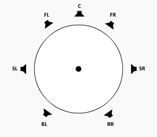
A pan with a 30 degree direction, and an extent (the black arc), that changes from 360 degrees with distribution in all speakers, down to a 10 degree extent that makes the audio focus on front right speaker only. The dot is a virtual representation of an equivalent x,y position of a signal in the circle.
The channel mapping of a source signal is scaled into the extent angle.
A pan with a 30 degree direction, a 60 degree extent, and the channels of a 5 channel source signal being scaled within the extent.
API reference. Setting the extent value can be done with the FMOD_DSP_PAN_2D_EXTENT parameter.
2D Surround Output Mode: Direction
The direction is the orientation of the arc (extent) in the output speaker circle that has sound distributed to it. A direction of 0 means audio is distributed towards the front of the listener. A direction of -90 is to the left, +90 is to the right, with -180 and +180 being behind the listener.
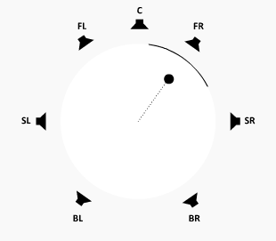
A pan with a 60 degree extent (the black arc) with a direction that starts at 30 degrees then does a full rotation around the speaker circle to end up where it started.
The channel mapping of a source signal maintains its original orientation regardless of the direction setting. As an example a 5.1 signal that has a direction of 90 degrees does not rotate this signal's channels, but concentrates the signal towards the direction depending on now narrow the extent is.
API reference. Setting the direction value can be done with the FMOD_DSP_PAN_2D_DIRECTION parameter.
2D Surround Output Mode: Rotation
For a multi-channel source signal, the channels inside the signal can be rotated from their original mapping, contained within the extent.
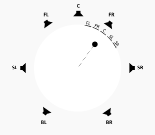
A pan with a fixed 30 degree direction and 60 degree extent, with a 5 channel source signal having its channels rotated over time inside the extent.
API reference. Setting the rotation value can be done with the FMOD_DSP_PAN_2D_ROTATION parameter.
2D Surround Output Mode: LFE Level
The LFE (Low Frequency Effects) channel of a signal is not positionable, but its level can be set independently. This is only available for surround output speaker modes.
The LFE level can be set to -80 dB for full attenuation up to +20 dB for amplification.
API reference. Setting the LFE value can be done with the FMOD_DSP_PAN_2D_LFE_LEVEL parameter.
2D Surround Output Mode: Stereo Source Discrete Panning
A stereo source signal is by default treated the same as other multi-channel source signals, with the left and right channels scaled within the extent (half of the extent dedicated to the left channel, half to the right).
Stereo source signals have an extra mode for discrete left/right panning in a circle, to give more focused distribution. The pan behavior for stereo source signals can be altered by setting the Pan effect's 2D stereo mode parameter from 'Distributed' to 'Discrete'.
API reference. Switching stereo signal pan behavior from distributed to discrete can be set with the FMOD_DSP_PAN_2D_STEREO_MODE parameter.
In discrete mode, the left and right channels are not evenly distributed over an extent range, they are rather audibly located to the extreme left and right of that range, with no distribution of the signal to speakers in-between.
Distributed mode continues to use extent and direction parameters to control distribution, whereas 'Discrete' mode uses 2 different parameters called 'Separation' and 'Axis'.
2D Surround Output Mode: Stereo Axis
For a stereo sound in discrete mode, the orientation is denoted by an angle inside the circle pointing to the outside of the circle, called 'Axis' parameter. This can be set between -180 for behind in the left direction, and +180 degrees for behind in the right direction.
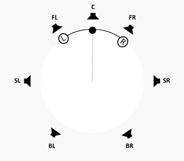
A pan of a stereo signal with a rotating axis and 60 degree separation.
As compared to distributed mode, in discrete mode the stereo axis setting rotates the mapping of the source signal channels around the circle, so that at +/- 180 degrees position the L and R source channels are reversed in the output speakers.
API reference. Setting the Stereo axis value can be done with the FMOD_DSP_PAN_2D_STEREO_AXIS parameter.
2D Surround Output Mode: Stereo Separation
For a stereo sound in discrete mode, The width of the pan distribution is known as 'Separation' and is represented by an angle with a range of -180 to +180 degrees, and a default of 60 degrees.
A default of 60 degrees with an axis of 0 degrees puts left in the front left speaker, and right in the front right speaker. Setting it to 0 puts the left and right in the same position and when it is negative the left and right source signal positions are swapped around.
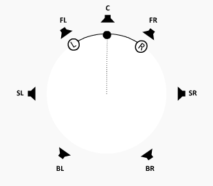
A discrete mode pan of a stereo signal with a 0 degree axis and a separation that starts at 60 degrees then shrinks to 10 degrees, then flips the left and right by moving to a -60 degree separation value.
API reference. Setting the Stereo Separation value can be done with the FMOD_DSP_PAN_2D_STEREO_SEPARATION parameter.
2D Surround Output Mode: Height
In a speaker setup with height speakers, the pan can be blended between the standard ground level speaker circle and its pan distribution, with the
When the input or FMOD_DSP_PAN_SURROUND_SPEAKER_MODE has height speakers, control the blend between ground and height. -1.0 (push top speakers to ground), 0.0 (preserve top / ground separation), 1.0 (push ground speakers to top).
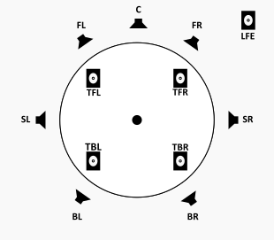
A 7.1.4 speaker layout, viewed from the top. The 'T' (Top) based speakers are located in the ceiling of the listener's room.
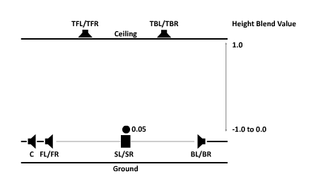
A side view of a 7.1.4 speaker layout, with a mono signal (dot) adjusting its height from the ground level (0) to the ceiling level (1).
With a signal containing no height speakers of its own (ie all standard ground based speaker layouts of mono to 7.1), any height value below 0 is capped to 0. Negative height values are reserved for signals with height speakers.
The height value behaves differently for 7.1.4 source signals.
| Height value | 7.1.4 signal behavior |
|---|---|
| 0 | Default position, leaving ground and ceiling level signal channels in their relative ground and ceiling level output speaker locations. |
| 0 to 1 | Affects height of ground level signal channels. Leaves the ceiling signal channels alone. Has the effect of raising up the source signal's ground channels the higher the number is. |
| 0 to -1 | Affects height of ceiling level signal channels. Leaves the ground signal channels alone. Has the effect of lowering the ceiling channels the lower the number is. |
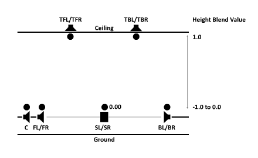
A side view of a 7.1.4 speaker layout, with a 7.1.4 signal (multiple dots) adjusting its ground level channels from the ground level (0) to the ceiling level (1).

A side view of a 7.1.4 speaker layout, with a 7.1.4 signal (multiple dots) adjusting its ceiling level channels from the ceiling level (0) to the ground level (-1).
API reference. Setting the Stereo Separation value can be done with the FMOD_DSP_PAN_2D_HEIGHT_BLEND parameter.
3D Surround Output Mode: 3D Pan Blend
As the pan effect can simultaneously utilise 2D commands and 3D commands to achieve the desired signal distribution among the output speakers, to hear the result of 2D commands only or 3D commands only or a mixture of both, the Pan Blend setting can be used.
The setting has a linear range of 0 to 1 and a default of 0, which is the equivalent of all 2D output only. The opposite value is 1, and the equivalent of 3D output only. Values in-between allow for a mixture of the two, which allows for 2D to 3D pan morphing or vice versa.
API reference. Setting the 3D Pan Blend can be done with the FMOD_DSP_PAN_3D_PAN_BLEND parameter.
See Also: 2D vs 3D
3D Surround Output Mode: Position
For positioning of audio in speakers, setting the 3D position of objects is the key step to correct panning. Panning is based in 3D mode based on the position and orientation of a virtual 'listener' (ie the player / the camera position) vs the sound (or in this case the Pan DSP).
The Pan effect allows more than 1 listener, which is most useful for split screen type scenarios.
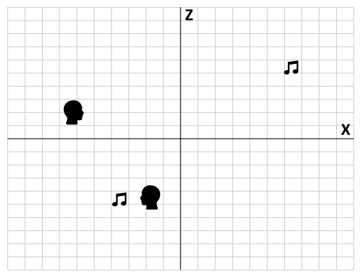
2 sounds playing in a 3D space (X/Z plane only) with 2 listeners active. The output takes both listeners into account to produce the current gain and pan for a sound.
API reference. Setting the 3D Position can be done with the FMOD_DSP_PAN_3D_POSITION parameter.
3D Surround Output Mode: Roll-off
Roll-off is the simulation of distance between the listener and the sound source, which translates to gain or in some cases gain of certain frequencies. The further a sound source is from a listener, the quieter it will be. The Roll-off is based on an attenuation curve which is configurable, depending on requirements.
Below is a list of the various roll-off modes supported, with a description of its features below. A common control for each roll-off mode is the Minimum Distance and Maximum Distance. These controls help simulate the size of the sound and the space that it is in.
Linear Roll-off:
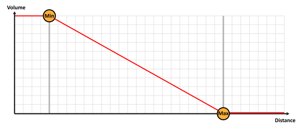
Linear roll-off keeps the volume unattenuated below the min distance, then attenuates to silence using a linear gradient to silence at the max distance.
Linear Squared Roll-off (Default setting):
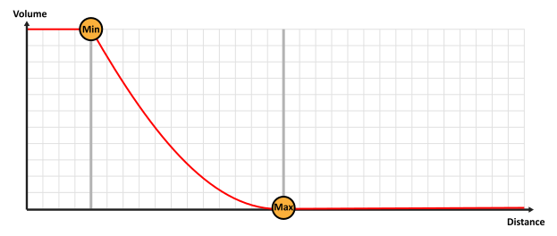
Linear Squared roll-off keeps the volume unattenuated below the min distance, then attenuates to silence using a linear squared gradient to silence at the max distance. This gives it a faster roll-off near the min distance, and a slower roll-off nearer to the max distance than linear mode.
Inverse Roll-off:
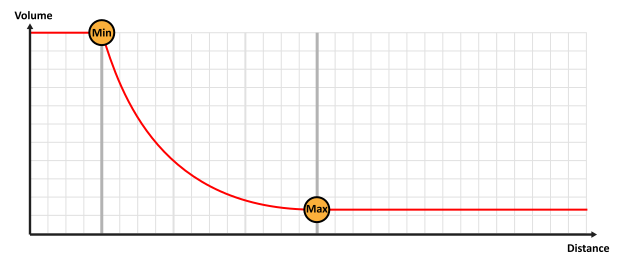
Inverse roll-off keeps the volume unattenuated below the min distance, then attenuates at a rate using min distance / distance as the gradient until it reaches max distance where it stops attenuating.
Inverse Tapered Roll-off:
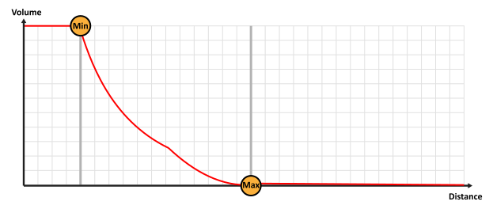
Inverse tapered is a combination of Inverse Roll-off and Linear Squared Roll-off. From min distance onwards Inverse is used, then if the gain is lower with Linear Squared, it will switch to that to ensure the gain hits silence at the max distance.
Custom Roll-off:
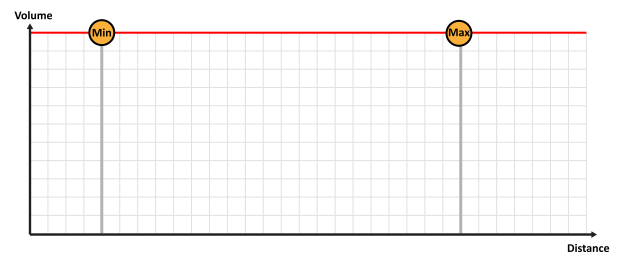
Custom roll-off can be defined by the programmer setting volume manually. Attenuation in the Pan DSP is turned off in this mode.
API reference. Setting the 3D Roll-off can be done with the FMOD_DSP_PAN_3D_ROLLOFF parameter.
3D Surround Output Mode: Min Distance
The minimum distance, in all roll-off modes is the distance from the listener that the gain starts attenuating.
In Custom roll-off mode the Min Distance is ignored.
API reference. Setting the 3D Min Distance can be done with the FMOD_DSP_PAN_3D_MIN_DISTANCE parameter.
3D Surround Output Mode: Max Distance
The maximum distance, is the distance from the listener that the gain stops attenuating (Inverse roll-off mode), or attenuates to silence (Linear, Linear Squared and Inverse Tapered roll-off modes).
In Custom roll-off mode the Max Distance is ignored.
API reference. Setting the 3D Max Distance can be done with the FMOD_DSP_PAN_3D_MAX_DISTANCE parameter.
3D Surround Output Mode: Extent Mode
In 3D, the speaker distribution method as described in 2D Extent is controlled via a combination of 3D Minimum Extent and and 3D Sound Size.
Both are controlled manually, automatically, or they can be disabled. In 3D the direction is determined automatically based on 3D positioning.
Automatic Mode:
In Automatic Mode the 3D Sound Size is automatically controlled based on sound source distance from listener (closer = bigger) and works off a base of 2 times the Minimum Distance. 3D Minimum Extent is set to 0.
In automatic mode, the signal distribution arc gets smaller as the sound source gets further away from the listener. As it approaches the listener, it gets bigger to distribute the signal throughout more speakers. This alleviates the source signal instantly flipping from one speaker to another if it crosses through the position of the listener.
Off Mode:
In Off Mode the 3D Sound Size is set to 0, and 3D Minimum Extent is set to 0.
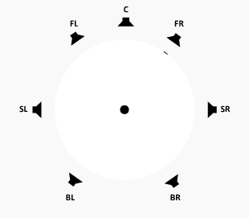
In off mode, the signal distribution arc becomes a point which pinpoints the distribution of the signal into one location, regardless of the sound source distance from the listener.
User Mode:
In User Mode, the 3D Minimum Extent and 3D Sound Size are set by the user using the parameters provided.
API reference. Setting the 3D Extent Mode can be done with the FMOD_DSP_PAN_3D_EXTENT_MODE parameter.
3D Surround Output Mode: Sound Size
The sound size parameter has an affect on the panner's extent, based on how 'large' the sound is. A very small sound is be concentrated more into a point source (a small extent) and a large sound is spread around the speakers more to convey a sense of envelopment (a large extent).
A source signal that is located near a speaker and does not move, but the apparent 'size' of the source changes from small to large, affecting the extent of the pan distribution around the circle.
This parameter is only available to be set in 'User' Extent Mode. In 'Automatic' and 'Off' mode, the sound size parameter is set automatically.
The sound size's affect on the extent can be clamped to a minimum angle, set with Min Extent.
API reference. Setting the 3D Sound Size can be done with the FMOD_DSP_PAN_3D_SOUND_SIZE parameter.
3D Surround Output Mode: Min Extent
The min extent parameter has an affect on the panner's extent, by acting as a clamp against the sound size's affect on it. If a sound size becomes small which can reduce the distribution of pan to a point source, the min extent parameter can set an angle to guarantee that the panner does not distribute the signal below this value.
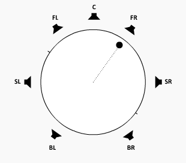
A source signal that is located near a speaker and does not move, with the sound size changing from largest to smallest size, but the extent being clamped by at the minimum extent angle, which in this case is set to 180 degrees.
This parameter is only available to be set in 'User' Extent Mode. In 'Automatic' and 'Off' mode, the min extent parameter is set to 0.
API reference. Setting the 3D Min Extent can be done with the FMOD_DSP_PAN_3D_MIN_EXTENT parameter.
General settings: Enabled Speakers
Speakers for target distribution of a source signal can be turned on or off to mute sound in a speaker and have the distribution shifted to other speakers.
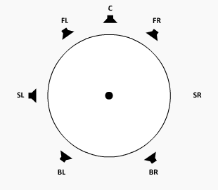
Speakers arbitrarily being turned off and on which alters the distribution of the source signal to the other speakers.
Note that signal does not disappear if its location was intended for a particular speaker, it just gets reassigned to other speakers. In a 7.1 speaker layout, if all speakers except for front left / front right were disabled, then sounds that are supposed to play in the back speakers would be mixed down to the front speakers like they would be in a typical stereo speaker output mode.
API reference. Setting the Enabled Speakers can be done with the FMOD_DSP_PAN_ENABLED_SPEAKERS parameter.
General settings: LFE Up-mix Enabled
LFE Up-mix Enabled determines whether non-LFE source channels should mix to the LFE or not. Default is off, so only an LFE source channel is audible in an LFE output speaker.
API reference. Setting the LFE Up-mix enabled can be done with the FMOD_DSP_PAN_LFE_UPMIX_ENABLED parameter.
General settings: Overall Gain
A read only parameter that allows the user to query the gain of the Panner based on all of the attenuation calculations.
Two values are returned, a linear gain value that represents the volume of the default audible output path of the DSP, and an additive linear gain value that represents the volume of the signal that is sent to other DSPs but not audible from the output of the DSP. This could be a send path to another DSP (See Send) or a send path to a hardware device (See Object Panner).
API reference. Getting the Overall Gain can be done with the FMOD_DSP_PAN_OVERALL_GAIN parameter.
General settings: Surround Speaker Mode
The surround speaker mode is the output speaker format for the panner. By default it is the same as the speaker mode selected for the user or by the user after the System's initialization.
API reference. Setting the Surround Speaker Mode can be done with the FMOD_DSP_PAN_SURROUND_SPEAKER_MODE parameter.
See Also: FMOD_DSP_TYPE_PAN
Performance
Pan is a low overhead effect.
10.1.19 Pitch Shifter
Pitch shifter can be used to change the pitch of a sound without affecting the duration of playback.
Pitch shifter uses a transform algorithm (FFT) to convert the signal from the time domain to the frequency domain. At this point the signal is manipulated to shift sinusoidal bands by the specified amount, then the signal is re-synthesized back into the time domain into a standard PCM signal.
This effect can also be used for time stretching or scaling, by shifting the pitch then altering the playback frequency in the other direction proportionally. As an example if the pitch was doubled, and the frequency of the sound was halved, the pitch of the sound would sound correct but it would be twice as slow.
This pitch shifter is based on the pitch shifter code at http://www.dspdimension.com, written by Stephan M. Bernsee. The original code is COPYRIGHT 1999-2003 Stephan M. Bernsee - smb@dspdimension.com under the Wide Open License (WOL).
The pitch shifter effect is controllable by the parameters:
- Pitch - The pitch can be set with a single linear value, which ranges from 0.5 octaves to 2.0 octaves, with a default of 1 which equals no pitch change. Set with FMOD_DSP_PITCHSHIFT_PITCH.
- FFT size - Quality can be altered with the FFT window size which ranges from 256 to 4096 with a default of 1024. Set with FMOD_DSP_PITCHSHIFT_FFTSIZE.
- Max channels - For performance reasons the maximum signal channel count support is pre-set to the channel count equal to the output speaker mode's channel count. On a Channel object it may be desirable to set it to a higher count if the sound playing on the channel has a higher channel count than the speaker mode. Set with FMOD_DSP_PITCHSHIFT_MAXCHANNELS.
See Also: FMOD_DSP_TYPE_PITCHSHIFT
Performance
Pitch Shifter is a high overhead effect.
This filter is computationally expensive. Reducing the signal from stereo to mono halves the cpu usage. FFT Window size also improves performance at smaller sizes. Reducing window size lowers audio quality, but which settings to use are largely dependant on the sound being played. A noisy polyphonic signal needs a larger fft size compared to a speaking voice for example.
10.1.20 Return
The use of a return effect is to receive a routed audio signal from a different location than its standard input inside the DSP Network.
A return effect receives routed audio from its partner DSP, the Send effect.
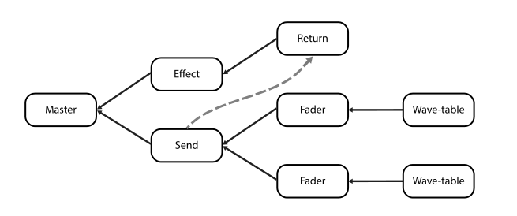
A mix graph showing a send and return deviating the signal from its normal signal flow, sending a copy of the signal (visible as grey dashed arrow) from the send, and receiving it on the return.
The return effect is controllable by the parameters:
- Speaker mode - The speaker mode of the receiving buffer can be set to a known speaker mode, or it can be left to automatically select, which is the default. Set with FMOD_DSP_RETURN_INPUT_SPEAKER_MODE.
The return effect can query the parameters:
- Return ID - The index that the Send effect will use for the 'Return ID' destination parameter. Get with FMOD_DSP_RETURN_ID.
Note that upon receiving the signal, it is buffered and therefore will incur one mix block of latency.
See Also: FMOD_DSP_TYPE_RETURN
Performance
Return is a low overhead effect.
10.1.21 Send
The use of a send effect is to route an audio signal to a different location than its standard output inside the DSP Network.
A send effect routes its audio to a partner DSP, the Return effect.
A mix graph showing a send and return deviating the signal from its normal signal flow, sending the signal (visible as grey dashed arrow) from the send, and receiving it on the return.
The send effect is controllable by the parameters:
- Gain - The gain of a send can be set with a linear value from 0 (silence) to 1 (full volume), and has a default of 1. Set with FMOD_DSP_SEND_LEVEL.
- Return ID - The destination index of the Return. Set with FMOD_DSP_SEND_RETURNID.
Note that upon receiving the signal on the return side, it is buffered and therefore will incur one mix block of latency.
See Also: FMOD_DSP_TYPE_SEND
Performance
Send is a low overhead effect.
10.1.22 SFX Reverb
The SFX reverb effect is a high quality I3DL2 based reverb to simulate an acoustic space. It is highly configurable so the many parameters can be altered to simulate small and wide open spaces.
SFX Reverb is a time domain low CPU cost with high quality and flexibility. Because it si is parametric, there is great control over the characteristics of the reverb, and it also means that reverb can change or morph over time from one preset to another.
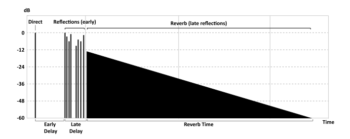
A diagram of the layout of time domain reverb. There is the original signal (direct) followed by some early reflected copies of the original signal (early reflections) then a diffused version of the original which decays over time (late reflections/reverb) to silence.
The SFX reverb effect is controllable by the parameters:
- Reverb Time - Reverberation decay time at low-frequencies from 100 ms to 20 seconds. Set with FMOD_DSP_SFXREVERB_DECAYTIME.
- Early Delay - Delay time of first reflection from 0 ms to 300 ms. Set with FMOD_DSP_SFXREVERB_EARLYDELAY.
- Late Delay - Late reverberation delay time relative to first reflection from 0 ms to 100 ms. Set with FMOD_DSP_SFXREVERB_LATEDELAY.
- High Frequency Reference - Reference frequency for high-frequency decay from 20 Hz to 20 kHz. Set with FMOD_DSP_SFXREVERB_HFREFERENCE.
- High Frequency Decay Ratio - High-frequency decay time relative to decay time from 10% to 100%. Set with FMOD_DSP_SFXREVERB_HFDECAYRATIO.
- Reverberation Diffusion - Reverberation diffusion (echo density) from 10% to 100%. Set with FMOD_DSP_SFXREVERB_DIFFUSION.
- Reverberation Density - Reverberation density (modal density) from 10% to 100%. Set with FMOD_DSP_SFXREVERB_DENSITY.
- Low Shelf Frequency - Transition frequency of low-shelf filter from 20 Hz to 1 kHz. Set with FMOD_DSP_SFXREVERB_LOWSHELFFREQUENCY.
- Low Shelf Gain - Gain of low shelf filter from -36 dB to 12 dB. Set with FMOD_DSP_SFXREVERB_LOWSHELFGAIN.
- High Cut Frequency - Cutoff frequency of low-pass filter from 20 Hz to 20 kHz. Set with FMOD_DSP_SFXREVERB_HIGHCUT.
- Early Late Mix - Blend ratio of late reverb to early reflections from 0% to 100%. Set with FMOD_DSP_SFXREVERB_EARLYLATEMIX.
- Wet Level - Reverb signal level from -80 dB to +20 dB. Set with FMOD_DSP_SFXREVERB_WETLEVEL.
- Dry Level - Direct signal level from -80 dB to +20 dB. Set with FMOD_DSP_SFXREVERB_DRYLEVEL.
The reverb can be controlled with simple to understand presets. The current preset list is:
- Off
- Generic
- Padded Cell
- Room
- Bath room
- Living room
- Stone room
- Auditorium
- Concert Hall
- Cave
- Arena
- Hangar
- Stone Corridor
- Alley
- Forest
- City
- Mountains
- Quarry
- Plain
- Parking Lot
- Sewer Pipe
- Under Water
API reference. Reverb presets can be set with FMOD_REVERB_PRESETS.
See Also: FMOD_DSP_TYPE_SFXREVERB
Performance
SFX Reverb is a medium overhead effect.
10.1.23 Three EQ
Three band equalizer. This effect splits the sound into lows, mids and highs, and allows each band to be attenuated down to silence or have a small gain applied.
For each band, the frequencies can be modified with the low/mid crossover frequency and the mid/high crossover frequency controls. The shape of the cross-over slow can also be changed for the bands, with 12 dB, 24 dB and 48 dB options available.
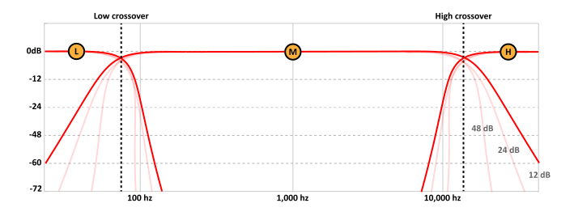
The Three EQ and the (L)ow / (M)id / (H)igh frequency bands each at 0 dB attenuation, with their cross over points displayed as the dotted lines and slope set to 12 dB. Alternate crossover slopes are shown in a lighter tone for 24 and 48 dB.
The three eq effect is controllable by the parameters:
- Frequency gain - Low, mid and high frequency bands can be attenuated or boosted with a range of -80 dB to +10 dB, and a default of 0 dB (no affect). These can be set with FMOD_DSP_THREE_EQ_LOWGAIN, FMOD_DSP_THREE_EQ_MIDGAIN and FMOD_DSP_THREE_EQ_HIGHGAIN.
- Low cross over - The low to mid cross over frequency can set with a range of 10 Hz to 22 kHz, and a default of 400 Hz. Set with FMOD_DSP_THREE_EQ_LOWCROSSOVER.
- High cross over - The mid to high cross over frequency can set with a range of 10 Hz to 22 kHz, and a default of 400 Hz. Set with FMOD_DSP_THREE_EQ_HIGHCROSSOVER.
- Cross over slope shape - The cross over slope can be set to 12 dB, 24 dB or 48 dB, with a default of 24 dB. Set with FMOD_DSP_THREE_EQ_CROSSOVERSLOPE.
See Also: FMOD_DSP_TYPE_THREE_EQ
Performance
Three EQ is a low overhead effect.
With the 12, 24 or 48 dB variations, this indicates whether the filter is run once (12dB), twice (24dB) or four times (48dB) to achieve steeper roll off curves. Performance scales linearly with the number of times the filter is run, therefore a 48dB filter (which runs four times) has approximately four times the CPU cost as a single 12dB filter with some reduction due to optimizations.
10.1.24 Transceiver
Like the Send and Return effects, the transceiver has the same capability bundled into one effect, with the extra capability to route an audio signal to up to 32 'stations' which any other transceiver could receive audio from. This means one transmitting could be received by unlimited different tranceivers in 'receive' mode to be audible in different parts of the DSP Network. In a 3D world this could be 1 expensive emitter (ie a stream) being broadcast in different 3D locations around the world simultaneously, at low CPU cost.
The transceiver transmits and receives to a global array of 32 channels. The transceiver can be set to receiver mode (like a Return) and can receive the signal at a variable gain. The transceiver can also be set to transmit to a channel (like a Send) and can transmit the signal with a variable gain.
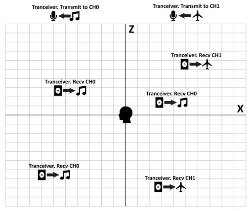
Sounds being transmitted by 2 transceivers in transmit mode, one sound transmitting to channel 0, and the other to channel 1. There is then a 3D scene with 5 transceivers tuned to either channel 0 or 1, which lets then broadcast the transmitted signal from different locations simultaneously.
Characteristics of the transceiver effect:
- Upon receiving the signal on the receive side, it is buffered and therefore will incur one mix block of latency.
- Multiple transmitters sending to the same channel are mixed together.
The transceiver effect is controllable by the parameters:
- Transmit mode - The transceiver can be set to 'transmitter' mode, or 'receiver' mode. Set with FMOD_DSP_TRANSCEIVER_TRANSMIT parameter.
- Transmit or receive gain - Set with a range of -80 dB to +10 dB and a default of 0dB. Set with FMOD_DSP_TRANSCEIVER_GAIN parameter.
- Transmit speaker mode - This can be set to either mono, stereo or surround. Surround is the speaker mode of the System. If in receive mode, the speaker mode has no effect. Set with the FMOD_DSP_TRANSCEIVER_TRANSMITSPEAKERMODE.
Transmitting different speaker modes to the same channel: Each transmitter can transmit in its preferred speaker mode of mono, stereo or surround. At the receive end, if there are multiple signals of different speaker modes in the same channel, it mixes them all together into the highest speaker format and use that.
See Also: FMOD_DSP_TYPE_TRANSCEIVER
Performance
To reduce memory overhead, aim to use the same transmit speaker mode for 1 channel.
Transceiver is a low overhead effect.
10.1.25 Tremolo
The tremolo effect varies the amplitude of a sound with a low frequency oscillator which results in periodic volume changes. Depending on the settings, this unit can produce a tremolo, chopper or auto-pan effect.
The tremolo effect is controllable by the parameters:
- Shape - The shape of the LFO (Low Frequency Oscillator) can set to sine, triangle and sawtooth waves by adjusting the this parameter. Set with FMOD_DSP_TREMOLO_SHAPE.
- Skew - The time skewing of the LFO (Low Frequency Oscillator) cycle can be set with a linear value between 0 and 1, with a default of 0.5. Set with FMOD_DSP_TREMOLO_SHAPE and FMOD_DSP_TREMOLO_SKEW parameters.
- Frequency - The speed of the LFO can be set in Hz, with a range of 0.1 Hz to 20 Hz and a default of 5 Hz. Set with FMOD_DSP_TREMOLO_FREQUENCY.
- Depth - The depth of the LFO can be set with a linear value from 0 to 1 where 0 is no tremolo and 1 is full. Default is 1. Set with FMOD_DSP_TREMOLO_DEPTH.
- Duty / Square - Duty and Square attributes are useful for a chopper-type effect where the first controls the on-time duration and second controls the flatness of the envelope. Set with FMOD_DSP_TREMOLO_DUTY and FMOD_DSP_TREMOLO_SQUARE parameters.
- Spread - The Spread attribute varies the LFO phase between channels to get an auto-pan effect. This works best with a sine shape LFO. Set with FMOD_DSP_TREMOLO_SPREAD.
- Phase - The LFO can be synchronized using the phase parameter which sets its instantaneous phase. Set with FMOD_DSP_TREMOLO_PHASE.
See Also: FMOD_DSP_TYPE_TREMOLO
Performance
Tremolo is a low overhead effect.
10.2 Legacy Effects
High level descriptions of built effects that are superseded by newer improved effects.
10.2.1 High Pass
Resonant high pass filter.
Development Status. Deprecated and will be removed in a future release
Use Multiband Equalizer as a replacement.
See Also: FMOD_DSP_TYPE_HIGHPASS
Performance
High Pass is a low overhead effect.
10.2.2 High Pass Simple
This is a very simple single-order high pass filter. The emphasis is on speed rather than accuracy, so this should not be used for task requiring critical filtering.
Development Status. Deprecated and will be removed in a future release
Use Multiband Equalizer as a replacement.
See Also: FMOD_DSP_TYPE_HIGHPASS_SIMPLE
Performance
High Pass Simple is a low overhead effect.
10.2.3 Envelope Follower
A simple envelope follower for tracking the signal level. Originally used internally by FMOD Studio tool, the effect has been superseded by other techniques.
Development Status. Deprecated and will be removed in a future release
See Also: FMOD_DSP_TYPE_ENVELOPEFOLLOWER
Performance
Envelope Follower is a low overhead effect.
10.2.4 Low Pass
Resonant low pass filter.
Development Status. Deprecated and will be removed in a future release
Use Multiband Equalizer as a replacement.
See Also: FMOD_DSP_TYPE_LOWPASS
Performance
Low Pass is a medium overhead effect.
10.2.5 Low Pass Simple
This is a very simple low pass filter, based on two single-pole RC time-constant modules.
The emphasis is on speed rather than accuracy, so this should not be used for task requiring critical filtering.
Development Status. Deprecated and will be removed in a future release
Use Multiband Equalizer as a replacement.
See Also: FMOD_DSP_TYPE_LOWPASS_SIMPLE
Performance
Low Pass Simple is a low overhead effect.
10.2.6 Parametric EQ
Parametric EQ is a single band peaking EQ filter that attenuates or amplifies a selected frequency and its neighboring frequencies.
When a frequency has its gain set to 1.0, the sound is unaffected and represents the original signal exactly.
Development Status. Deprecated and will be removed in a future release
Use Multiband Equalizer as a replacement.
See Also: FMOD_DSP_TYPE_PARAMEQ
Performance
Parametric EQ is a medium overhead effect.